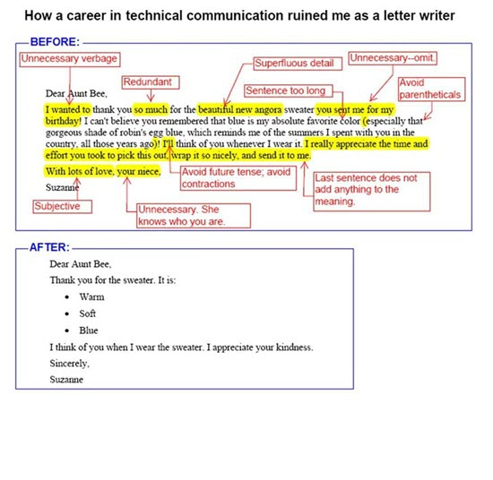

Only provide the information your readers need to grasp the concept or perform the task
Cut into redundant information. Do not crowd your page with unnecessary information or too many details. Your reader will lose interest or even get lost.
Only provide the information once
Do not offer a thousand ways to reach the same solution: one is enough. Avoid repeating information in several places in the document, if possible. Links are a useful solution here.
Some advantages
Information scanning improves.
Users remember more.
Smaller costs for DTP work, translations and printing.
Do not exaggerate
Minimalism walks a thin line between leaving out the unnecessary and keeping the essentials. Check that you have not cut out so much that there are gaps in your explanation or procedure. This is very important in work instructions: gaps can create safety risks.

1 Source: 16 quick tips for better work instructions, by Dozuki